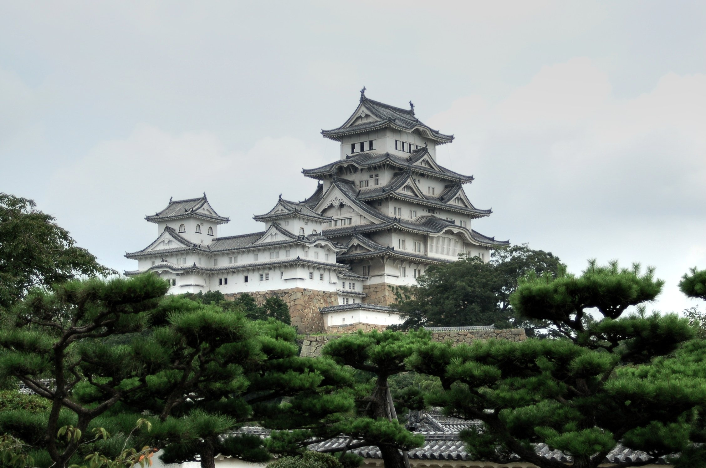

New Zealand
The backdrop of New Zealand is truly magnificent with its prehistoric forests, widespread beaches, snowclad mountains and remarkable springs. The coexistence between Maori and European people forms the basis of the distinctive New Zealanders culture.
New Zealand is also one of the easiest places to travel on earth because of its well-developed infrastructures and high quality of service it offers. The food, wine and beer of this land also offer travelers with supreme sense of taste.
Australia
Australia is not just a nation but a continent as well. In its enormity, lies a world within our world which is rich in ethnic and cultural diversity, amazing landscapes and offers numerous opportunities for entertainment.
This is a nation of relaxed sociability and lively spirit evident in every turn of a corner. Travel in Australia can be expensive but costs can be reduced using travel coupons and booking flights ahead of time. A sunny climate all year around is one of the major reasons behind Australians’ liveliness which has led to a prominent cultural focus onoutdoor living, demonstrated by vibrant beaches and outside camps.
Japan

Japan is a unique blend of tradition and innovation. The superb religious and cultural heritages from the past co-exist extraordinarily with state-of-art technological and architectural achievements in the present..
Mount Fuji, Imperial Palace, Hiroshima Peace Memorial Park, the Island Shrine of Itsukushima, Osaka National Park, Chubu-Sangaku National Park and the Japanese Alps are some of the other notable places to visit in this exotic nation.
Thailand
With intriguing history, Thailand is one of the most popular tourist destination in Southeast Asia.From the ancient Buddhist temples and beautiful palaces to its pristine islands and national parks, Thailand provides for all kind of tourists.
The capital of Bangkok with its bustling streets and gigantic malls contrasts sharply with the tranquil villages in the hills. But this diversity is exactly what makes Thailand a fascinating destination for travellers.
Nepal
A tiny Himalayan nation lying between the two big neighbors, China and India, Nepal is a world in itself. No country in the world offers such wide range of experiences in such a small area.
Some of the best places in the world for trekking and mountaineering are located in this nation. Eight out of ten of the tallest mountains in the world are here. It is probably the best place for adventure tourism with endless opportunities for safari, rafting and paragliding.
South Africa
This southern African nation is a place that doesn’t disappoint visitors. It’s a large, diverse and unbelievably beautiful destination. South Africa is also a major cultural hub of the African continent.
Cape Town and Johannesburg are constantly ranked among the best cities for travelers. The enigmatic Table Mountain and Table Bay ought not to be missed while travelling to South Africa. The vineyards of Franschhoek also certainly beckon.
Botswana
Botswana is as awe-inspiring for travelers as is the story of the nation’s journey from abject poverty to being now one of the most stable economies in Africa. The way it has been able to preserve its natural treasures in the midst of all this economic growth is also equally impressive.
Germany
Germany is one of the best countries in the world to explore. It might be a little bit heavy on the budget. However, great food, impeccable beer and superb views all more than make up for the bucks spent.
The nation offers diversity from the green hills in Bavaria to icy mountains in the Alps and bustling cities like Munich to serene medieval towns like Tuebingen. It is full of magical castles and historic sites all over the nation.
France
A trip to France is on the bucket list of almost everyone and this nation surely deserves that. This country holds a unique appeal for folks from all around the globe for its culture, wines, cuisine and landscapes.
This land of champagne and cabaret is probably the most romantic place on earth. Although the capital of Paris may attract all the attention and the notion of romance may be heavily linked to this city, the country has much more to offer beyond the walls of Paris.
Spain
A trip to Spain is sure to leave travelers yearning to return again and again. In the words of the Spaniards themselves, there is not one Spain but many Spains, a reference to the nation’s diverse natural landscapes and cultures. And, not a single one of these Spains will disappoint travelers.
Italy
The land of beautiful people and lovely food, Italy, is a dream destination for travelers. It really has much to offer travelers from nature and art to food and a beautiful climate. Even the most demanding of visitors can be expected to be left in awe by this nation.
This is a nation like no other. It boasts striking terrains and picturesque hills. Add to that, the trace of cultural history is all-pervading. The home of Roman Civilization and Renaissance Era, no place in Italy will fail to offer an experience memorable for a lifetime.
Greece
Greece may have undergone an economic crisis recently but it still remains a premium tourist hub, which owes both to its historic cultural heritages and natural spectacles such as its beaches, mountains and islands.
Greece has been endowed with natural beauty in every possible form. The grandeur of nature’s beauty extends from the colossal Aegean to the cloud covered peak of Mt. Olympus.
The historic capital of Greece (i.e. the ever bustling city of Athens) may be the most famous place but there are plenty of other equally fabulous places to visit as well. Some of the not-to-be-missed ones are Meteora, Santorin, Delphi and Thessaloniki.
Mexico
Concerns about security in Mexico might be raised frequently. However, apart from the northern border region which constantly makes headlines for all the wrong reasons, there’re more reasons to be excited than worried about a trip to Mexico.
Mexico is the land of beautiful beaches, cultural temptations and spirited nightlife. From its historic Mayan sites to the quiet riversides, this nation offers diverse cultural and natural experiences at a much cheaper price compared to most of the other destinations.
Canada
Canada is the largest North American nation; its huge landmass is filled with grandiose mountains, virgin forests and remarkable coastlines. Added to all these wonders that make for breathtaking scenery, is the hospitable atmosphere shown throughout the country.
Canada offers travelers wide range of experiences. One can go camping on Vancouver Island, stroll through the cosmopolitan Toronto streets or be off to climb the peaks on the Canadian Rockies.
The pine forests in the east along with lively coastline communities call for a road trip in the summer. Meanwhile, Quebec is perfect for skiing during the wintertime.